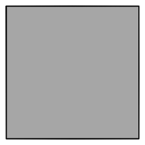
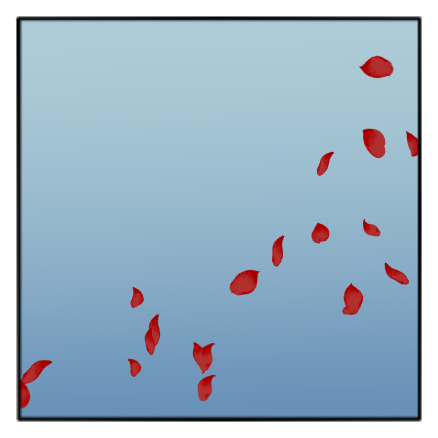
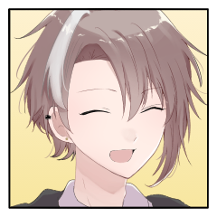
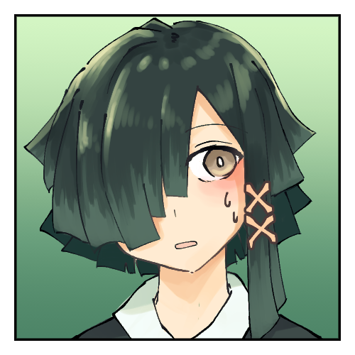
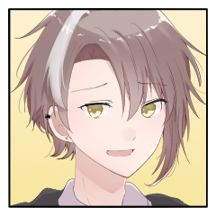

聖堂の鐘 ５日目
GM
[ここまでの聖堂の鐘]
仲良し(指差し確認)
出目悪し(指差し確認)
狂信だけど【秘密】は知らない(指差し確認)
ヨシッ!
GM
第二サイクル最後の戦闘からだ、よろしくお願いします。
GM
野郎どもはプロット終わってたのであけていきましょうか( :)3
カイジ
シークレットダイスってランダムなんですか？
[ 伴 護伴 ] がダイスシンボルを公開。出目は 3 です。
[ 魔像 ] がダイスシンボルを公開。出目は 5 です。
[ 魔像(2) ] がダイスシンボルを公開。出目は 3 です。
[ カイジ ] がダイスシンボルを公開。出目は 5 です。
[ ソーニャ ] がダイスシンボルを公開。出目は 5 です。
ソーニャ
2D6>=5 （判定：異形化） (2D6>=5) ＞ 6[2,4] ＞ 6 ＞ 成功
ソーニャ
＊霊装：呪術。
回避判定を呪術で振ってください。
魔像
2D6>=9 （判定：見敵術） (2D6>=9) ＞ 6[1,5] ＞ 6 ＞ 失敗
魔像
好きなタイミングで差し入れるとよいとされる。八つ当たりでカイジに接近戦攻撃します。
ソーニャ
気付けば魔像の胸元にとす、と赤い薔薇が突き立っている。
魔像
2D6>=5 （判定：仕込み/接近戦>カイジ） (2D6>=5) ＞ 10[5,5] ＞ 10 ＞ 成功
ソーニャ
赤い薔薇はその胸元に罅を作るが、魔像の動きは止まりきらない。
カイジ
2D6+1>=7 （判定：歩法） (2D6+1>=7) ＞ 5[2,3]+1 ＞ 6 ＞ 失敗
カイジ
振り直しなし！
＊時雨＞魔像2
よろしくお願いします！
カイジ
2D6>=5 （判定：砲術） (2D6>=5) ＞ 9[3,6] ＞ 9 ＞ 成功
カイジ
出目を逆にしろ。狭霧があるので回避判定-1でお願いします。
ソーニャ
ので、ナバリユヅキは演出修正くれるとうれしいなっ くれるかなっ
魔像(2)
ちなみに今は目標値7に大して1マイナスです。
カイジ
罅割れながらも接近する魔像。存外に動きは早く、打撃を一つ貰う。舌打ち。
カイジ
殴りかかる動作――は、その魔像にではない。これはもうじき斃れる。気に食わない奴だが、その腕が確かなことを知っている。
ピンの抜ける音。
もう一体の魔像に向け、その動作で投擲したのは、手榴弾である。
ナバリ
――ぎし、と魔像の軋む音がする。手入れもされない石の魔像が、長く海風に晒されればどうなるか――
ナバリ
つまりは、老朽化。忍者の速度によくついていけてるようにも見えるが、まだその動作に"つっかえ"のようなものを感じる。
ナバリ
てことで、魔像2の回避に演出修正マイナスって感じで、どうでしょうか あってるよな？
魔像(2)
< もう歳じゃわ はい、合ってます。OKです。
ユヅキ
その動かしにくい体に加えて──目の前に投げられたのは手榴弾、このような場所に鎮座し続けていた魔像にはあまり縁のないものだ。
ユヅキ
それが己の身を害する危険物なのだと認識できるまで、直接刃を降りおろされたときよりも幾らか、時間がかかることだろう。
魔像(2)
というわけで-3つけて回避します ざけんな
魔像(2)
2D6-3>=7 （判定：潜伏術） (2D6-3>=7) ＞ 10[4,6]-3 ＞ 7 ＞ 成功
ソーニャ
カイジを強かにうちつけた魔像に手を掛けて、ぴょんと高くヴェネツィアの空を飛ぶ。
ソーニャ
爆風から逃れながら、その白煙を見下ろしているが。
魔像(2)
日本の斜歯忍軍から見れば、旧式もよいところなのは事実である。が、"それが危険だ"という認識を得た後の対処は的確だった。手榴弾なんぞより盾の方が歴史は長く、飛来する破片と触れ合って甲高い音を立てる。
魔像(2)
プロット5の処理を解決しましてー カイジ君はー
ソーニャ
ちょっと高いところに着地しつつ、高速機動から脱落していくカイジへと。
伴 護伴
2D6>=5 （判定：骨法術/速攻） (2D6>=5) ＞ 12[6,6] ＞ 12 ＞ スペシャル(【生命力】1点か変調一つを回復)
伴 護伴
2D6>=5 （判定：人脈） (2D6>=5) ＞ 8[3,5] ＞ 8 ＞ 成功
魔像(2)
2D6>=8 （判定：見敵術/回避） (2D6>=8) ＞ 9[4,5] ＞ 9 ＞ 成功
魔像(2)
盾を構えぬもう片方の腕で、煙に紛れて寄ってきた若者をも一蹴する。
そのまま仕込みの接近戦攻撃で護伴君を殴ってー
魔像(2)
2d6>=5 (2D6>=5) ＞ 8[3,5] ＞ 8 ＞ 成功
伴 護伴
2D6>=9 （判定：手裏剣術/回避） (2D6>=9) ＞ 10[4,6] ＞ 10 ＞ 成功
ソーニャ
「おー」若者はがんばるなー、と上から見てます。
伴 護伴
「くっそ」鎧の隙間から飛び出してきた仕込み刃に、攻撃の為に取っていた手裏剣を空費させられる。
伴 護伴
ラウンド終了でっす。特に忍法とかなかったはずなので次いくぜ。
ソーニャ
「避けただけ偉いよー！」なんて笑って、壁を蹴って姿を消します。
[ ソーニャ ] がダイスシンボルを公開。出目は 1 です。
[ 魔像(2) ] がダイスシンボルを公開。出目は 5 です。
[ 伴 護伴 ] がダイスシンボルを公開。出目は 4 です。
伴 護伴
「まあ矢面にぐらいは立ちますが、そうあからさまに見物姿勢を取られると釈然としませんね」
ソーニャ
「その子がそこまでやる気出すとは思わなくて」
ソーニャ
「夜は長いんだ、ちょっとは大目に見てくれよ」
魔像(2)
御斎魂のせいでちょうど相手が持ってると言っても砂縛を撃ちたくなってしまう。砂縛を護伴君に。
魔像(2)
2D6>5 （判定：野戦術） (2D6>5) ＞ 7[3,4] ＞ 7 ＞ 成功
伴 護伴
2D6>=5 （判定：野戦術/回避） (2D6>=5) ＞ 8[3,5] ＞ 8 ＞ 成功
伴 護伴
2D6>=5 （判定：手裏剣術） (2D6>=5) ＞ 7[1,6] ＞ 7 ＞ 成功
伴 護伴
というわけで今ラウンドの演出入れどころさんです。
ソーニャ
というわけでナバリとユヅキから、魔像の回避に友情演出修正をもらえると助かります。
ナバリ
手榴弾の破片の、飛びどころが悪い。関節部分に差し込まれたように挟まったそれが魔像の機敏な動きを阻む。

ユヅキ
魔像も魔像で学ぶ生き物である。よく分からない突飛な色をしたものが、仲間の動きを妨げたのはわかっているのだ。しかし、となれば警戒を向ける先も増えるもので。それもまた判断を遅らせる一因になることだろう。
ユヅキ
俺は……お前の判断を遅らせることしかできない……演出修正です！
魔像(2)
< さるが伝染させられてんですけどぉ はい。OKです。振ります。
魔像(2)
2D6-2>=8 （判定：潜伏術） (2D6-2>=8) ＞ 5[2,3]-2 ＞ 3 ＞ 失敗
魔像(2)
既に破片の入り込んだ隙間をさらに手裏剣で押し込まれ、自らを動かす力でバラバラになる。
伴 護伴
「おかしいなあ、修学旅行に教師の同行はないことになってたのに」言葉はぼやいてるけど若干照れくさそう。
ソーニャ
調子に乗ってぱちぱち手を叩きます。拍手。
ソーニャ
「君の目的は、『蒼海の珠』を”見る”ことだったよね」
ソーニャ
見る、にアクセントを置いて問いかけます。
伴 護伴
「そうですね。……ああ、その後は見なかったことにするだけなので。ヒノサカさんにも触るなって念押しされてますし」
ソーニャ
「はいはーい。オレもユヅキくんのオトモダチ殴りたいわけじゃあないしさあ」
伴 護伴
そういう感じで。特に勝者を持ってく意思はないので脱落します。
GM
勝者はソーニャ君です。形式的に訊きますが戦果は何にしますか？
GM
はい。プライズが移ります。所有者になったので【秘密】をお送りしますね。
GM
なお、情報共有は発生しないって【秘密】に書いてありました。見たい人は第三サイクルでもらってください。
ソーニャ
秘密もらうまで含めてRPしたいから、安置してるとこに行くとこやっていいですか？
GM
もちろん。ではそうですね、残骸はほっといて、護伴君はソーニャ君の3歩ぐらい後ろからついてきます。
ソーニャ
２柱の魔像を退け、聖堂の中央を悠然と歩く。
カイジ
その更に後ろから着いていきます。一番後ろ。
GM
もうその行く手を阻もうとするものはいません。観光客立ち入り禁止の表示も虚しく無視され、質素でひっそりした祭壇に安置されたそれを見ます。
ソーニャ
立入禁止のバーもひょいとまたいでしまいます。
ソーニャ
よく似た色の蒼玉に、そのかたちを映し込む。
カイジ
「……とっとと取っちまえよ。ほら」
情緒が無い。
ソーニャ
「オレが取っちゃっていいのかなあ～」
心にもないことを言いながら手を伸ばします。
伴 護伴
「見た目は何の変哲もないんですね」情緒が落ち着いてきた。
伴 護伴
触ったら爆発するでもなく、ひんやりしています。
夜ゆえに乏しい明かりが珠を照らす。
GM
照らした先に、"それ"が識る【秘密】が映し出される。
GM
ただ、淡々と。部屋は静かだ。別にこの場の誰が意図したわけでもなく。
ソーニャ
「……なるほど。お偉方が欲しがるわけだ」
ソーニャ
珠を取り上げ、にっこりと笑って護伴を振り返る。
伴 護伴
「今の所は。じゃあ帰ります、で済まなさそうなのが困ったものですが」
ソーニャ
護伴に相槌を打って、今度はカイジを仰ぎ見る。
カイジ
「……お前はどうするつもりだ？」
苦々しさは消え。真剣な声音。
ソーニャ
「彼らのことは可愛らしく思っているけれど――」
ソーニャ
「馬鹿げた自己犠牲の、献身をするほどじゃあない」
カイジ
「……もう少し探る。まだ何かあるかもしれねェ」
ソーニャ
「最後まで足掻いて、オレを愉しませてくれ給え！」

ソーニャ
赤い薔薇の花びらとなって消え失せる。
伴 護伴
「あの人、いつもこんな感じなんですか？」
伴 護伴
「厄介ですね。友人が素直な方で助かった気分になるとは」
伴 護伴
「どうでしょう。場合によっては、あいつの意に反することになるかも」肩を竦める。
伴 護伴
「次も利害が一致していることを願っておきますよ」
伴 護伴
答えになってないような一言を返して踵を返す。
カイジ
「尻拭いくらいはしてやるよ。ガキはやらかすもんだ」
そう、背に声を掛け。
自身もその場から立ち去る。
GM
█ █████
【使█】██ネ█ィア█滅█す
████守██。十字███頭█より█神█され、
██世███代█、当██ヴェネツィ██和国█よって封印され█。
GM
■ HO:古龍
【使命】ヴェネツィアを滅ぼす
かつての守護竜。十字教の台頭により邪神とされ、
１４世紀の時代に、当時のヴェネツィア共和国によって封印された。
GM
第三サイクルに移ります。ナバリちゃんからのままで良いですか？
GM
HOがあるので、【秘密】もあります。情報判定の制限はないです。
カイジ
制限はない、ということは誰でも秘密を抜けるという認識で合ってますかね？
GM
【秘密】に変なこと書いてなければ、が一般的な回答ですが、古龍に関しては発生します。
カイジ
なるほど なるほど なるほどね……
古龍の秘密を抜きたいなあ。カイジはそういう動きをしたいんですが、ナバリちゃんどうしましょ。早く抜いた方が良いかなの気持ちがあり。
でもめっちゃ先に行きたければ止めないです。
カイジ
2d6 (2D6) ＞ 12[6,6] ＞ 12
GM
12:壁の中に消える不思議な女の子を見かける。彼女はいったい……？このシーンに登場したキャラクターは、兵糧丸、神通丸、遁甲符からランダムに選んだ忍具を１個獲得する。
ソーニャ
登場したらどっかのタイミングでもらえる認識で大丈夫ですか？
GM
はい。<登場したら シーン終わるまでに1d3振ってもろて、
1: 兵糧丸、2: 神通丸、3:遁甲符 とします。
ソーニャ
シーンプレイヤーじゃなくてこのシーンに登場したキャラクターって書いてある。
カイジ
では戦闘から一夜明け。街を探っています。愚直に。虱潰しに。足を使って。
カイジ
このシーンでは皆様ねじ込めるところで良い感じに顔を出すことが推奨されています。あと感情修正ください。
GM
まあ判定自体は早い方が話は早くなるかもしれない。
カイジ
じゃあ判定しましょう。古龍の秘密を抜きます。その通り見敵術から。
ソーニャ
では街を練り歩くカイジの行く先行く先に。
ソーニャ
あなたを招くように、あるいは導くように、きょろきょろと視線を彷徨わせては道を歩み、空を羽ばたく。

ユヅキ
では街の隅々を歩いているカイジに気が付くことも無く、その少年は今日は少女を連れて。
ユヅキ
「ナバリ、次はどこ行く？ おすすめある？」
ナバリ
「…ここの、路地裏。よく…猫、いる」人の求めるものがよくわかっていない答えを返した。
ユヅキ
「猫いんの！？ やった～！ ヴェネツィアのねこは何色かな～」
ユヅキ
あなたのおすすめならなんでもよかった少年は、一緒に猫の色を確認しにいったとされる。にゃー！
ソーニャ
1d3 鳩も忍具もらっておきます。 (1D3) ＞ 2
カイジ
街を歩く中、ふと見えたのは見覚えのある鳩。
それから、楽しそうな少年少女。
GM
さも当然のように神通丸を引き当てやがって...
カイジ
「……」
くる、と先程補給した神通丸を手で弄び。
ナバリ
じゃあ路地裏の猫が謎ぺろぺろしてた遁甲を貰っていこう。おなかこわすよ。
カイジ
感情修正を2頂きまして、古龍の秘密を見敵術から。
カイジ
2D6+2>=5 （判定：見敵術） (2D6+2>=5) ＞ 7[1,6]+2 ＞ 9 ＞ 成功
ナバリ
この場でカイジが公表してくれてもいいんだよ（？？？）
ソーニャ
気付けば近くの看板に留まった鳩がカイジを見下ろしている。
カイジ
「……まだ何か、」
あるのか？ 分からない。
ソーニャ
その決意を検めるように、つぶらな黒い瞳でカイジを見ている。
カイジ
分からないが、立ち止まっているよりは余程マシなように思える。
ちらと鳩を一瞥する。情報はあちらにも渡っただろう。
それから、また歩き出した。
GM
カイジを殴って話を訊きますか？平和に街中で話を訊きますか？
[ カイジ ] 器術 : 1 → 0
[ ソーニャ ] 忍具 : 1 → 2
ナバリ
殴って話聞くの草。普通にドラマシーンやるょ。
ナバリ
2D6 (2D6) ＞ 12[6,6] ＞ 12
カイジ
街を練り歩いてるのですれ違っていることでしょう。
ソーニャ
＜こうなるとカイジと話をした方がそれっぽくはある。
ナバリ
……じゃあナバリとユヅキ視点だと完全に地続きのシーンだな。まだねこかわいいしてるので、とりあえず忍具ガチャしますね。
GM
誰だよ街に忍具ばらまいてるやつ!!!!!!!
ナバリ
多分うっかりした世界忍者連合のやつが落っことしてるだろこれ。
Valeria Anselmi
< わたしじゃないわよ
ナバリ
じゃあねこが計四枚ぐらいなんか纏めて持ってたので、没収します。食べ物じゃないょ。
カイジ
御用があればすれ違うだけではなく出てくることも可能です。と言いつつしれっと振っちゃお。
GM
ココフォリアとかいうダイスサイトゆるさない(棒読み)
ナバリ
カイジが古龍の秘密を抜いた傍らで、ねこかわいい～したナバリとユヅキ、って感じで。
ナバリ
次どこ行こうか～、なんて話をして、路地裏を出た、矢先。
ナバリ
――先程までの喧騒が、嘘のよう。それほど広くはないものの、もう少し人で溢れていたはずのその道。
ナバリ
簡単な"人払い"が張り巡らされている事に、ユヅキは気付けるだろうか。
ユヅキ
choice 気付く 気付かない (choice 気付く 気付かない) ＞ 気付く
ユヅキ
一応これでも学園でシノビの術を学んでいる身ではある。ちょっとした違和感、その程度は抱いたものの。
ユヅキ
それをわざわざ言及するかどうかは、貴方の行動によるのだろう。何もなければねこ～を歌っている。
ナバリ
「……あのね」何か言いたげに、立ち止まる。
ユヅキ
ねこの歌を止めて、同じように立ち止まり、貴方を見た。
ナバリ
「ナバリは、…ずっと、待ってた」ぎゅ、と右手。硬く、何かを握りしめるような仕草。
ナバリ
ユヅキの秘密を抜きます。感情修正は……もらえるかな！？
ナバリ
2D6>=5 （判定：言霊術） (2D6>=5) ＞ 9[3,6] ＞ 9 ＞ 成功
GM
■PC2 推奨：私立御斎学園/○/中忍
・使命：【修学旅行を楽しむ。】
・導入：
あなたは修学旅行でこの水の都にやってきた。
あなたは街で偶然出会ったPC1が気になっている。
・秘密：
あなたはPC1に一目惚れした。この修学旅行が終わってしまえば、また会えるかは疑わしい。
あなたの【本当の使命】は「PC1に告白し、その返答をもらう」ことである。
ナバリ
「………え。」それだけを吐いて、ちょっとフリーズしてしまった。
ユヅキ
「でも、なんか、思っちゃったからどうしようもなくってさ、皆への好きって全部一緒だと思ってたけど、ああ、違うんだなってなっちゃって」
ユヅキ
「……ただ、俺もずっとびっくりしてるんだ、整理できてないこと、ある」
ユヅキ
「ナバリと会うの、初めてじゃなかったんだもんなあ……」
ユヅキ
と、まあ、貴方がフリーズしている間に、ぽつぽつ、言葉を落としていく。
ナバリ
「…………」ドストレートな言葉を受けて、落とされた言葉をひとつひとつ拾う内に、やっと少しずつ飲み込み始めて。みるみるうちに顔が赤くなる。

ナバリ
「は、はじめてじゃない」それはそう、と、焦りから少し吃りつつも同じ言葉を返す
ナバリ
「ナバリも、まだ、わかんないこといっぱいあって、…短い間に、いろんなことがありすぎてる、から」
ナバリ
「…ちょっとだけ、手伝って、欲しい」この流れで言うと、なんだか好意を利用するようで気が引けるけれど。
ユヅキ
「ナバリが手伝ってほしいことあるんだったら、なんでも手伝うし」

ユヅキ
「返事だって今じゃなくていいし」
ユヅキ
「話したいって思ってもらえるのはうれしいし」
ユヅキ
「目の前でそんな表情されたら、こんなに嬉しくなっちゃうのか」
ユヅキ
覚えてもいなかったくせに、と。この罪悪感と添えるには、贅沢なような気がしたから。
ユヅキ
くる、と貴方に背を向ける。困ったな～困ったけど、今はとりあえず。
ナバリ
「ナバリの、手伝って欲しいこと。……それは、」
ナバリ
「……知っている事があれば、教えて欲しい。"この街で起きている事"について」
ナバリ
「それから…ユヅキの。ともだち？が、何をしているのか、知っていたら」
ナバリ
「…ヴェネツィアの事、大事だから。何かが起きそうなら、できれば――」
ナバリ
ちゅーわけで、古龍の秘密が欲しいんですね。
ユヅキ
「ナバリの街、……ううん、俺たちの、街？ 俺も、守りたいもんな！」
GM
■ HO:古龍
【使命】ヴェネツィアを滅ぼす
かつての守護竜。十字教の台頭により邪神とされ、
１４世紀の時代に、当時のヴェネツィア共和国によって封印された。
【秘密】
あなたは長年に渡り、ヴェネツィアの力として街を守護してきた。
しかし１４世紀、あなたは邪神とされ、ＰＣ１の一族によって「心の雫」に封印された。
「蒼海の珠」とはその際に用いられた魔術具だ。
あなたは【追加の使命】として「ＰＣ１と全ての十字教徒に復讐する」を持つ。
その為に、ＰＣ１の手に渡るように、「心の雫」の持ち主だったＰＣ２に干渉し続けてきた。
あなたは「軍勢」(P166)の能力を持ち、
低級妖魔「水怪」を親衛隊及び援軍として召喚できる。
古龍と全ての眷属は龍宮のキャラクターとして扱い、戦場の極意：水中を修得する。
ナバリ
「街を守りたいから」って渡してもらった秘密に「街の守護竜」の情報書いてるのあまりに皮肉過ぎるだろ。
ナバリ
「………」街の、守護竜？一族？長く住んでいたのに、わからないことがまた増えている。
ユヅキ
「…………」だいじょうぶかな……と見つめている。
ユヅキ
「ん～……わかんない……わかんないけど……探す！」
ナバリ
「うん」一緒に探そうという言葉には、珍しく強く頷いて。
ユヅキ
2d6 (2D6) ＞ 5[1,4] ＞ 5
GM
05:ゴンドラでの移動中。漕ぎ手が行き交うゴンドラに手を振っている。
GM
待ち構えるのには不向きなの出たな、ちょっとかんがえる。
GM
――通常、この街におけるゴンドラは試験を乗り越えた免状持ちのゴンドリエーレのみが操ることができる。ゆえに、係留されていないゴンドラに彼らがついていないことはない。
GM
しかし、探し人は一人、ゴンドラで支流のひとつに浮いていた。直前まで誰かと話していたのか、こんのスマートフォンの時代にガラケーを折り畳んでいる。
ユヅキ
街をナバリと練り歩いたものの、ごはんセンサーは見事に外れて中々見つからなかった。
ユヅキ
そんな中、川を見ていてふっと思い当たる。地上に居ないのであれば、水上では？
ユヅキ
そのセンサーをそのまま信じて、辿り着いたその先に。
ユヅキ
一人でいることの異質さも気には留めずに、ぶんぶんぶん、絶対届く音量の声で名を呼んでは手を振っている。
伴 護伴
きっちり学生服を着た外国人がひとつでぽつんと、ぼーっと、浮いてようものなら、いっそ不審者でもあるような。しかし、周囲の誰も気に止めず、そこにいた。
「予想より早かったな」
ユヅキ
「待っててくれてた？ ごめん、遅くなって」
ユヅキ
「……早かったんだから、遅くはないから、問題ないか」一人で納得してる。
伴 護伴
「いや、もう少しのんびり楽しんでくるんじゃないかと思っていただけさ。帰りの集合時間に遅れたわけでもないし」
ユヅキ
「あはは、いっぱいのんびり楽しんでたぜ、でも大事なことがあるので……」
ナバリ
そんな元気なユヅキの後ろに、しれっと控えている。佇まいこそ似ているものの、先日ゴンドラでともに揺られていたのとは空気が違っていた。
ナバリ
「……聞きたいことがある」珍しく、とても直球な言葉を投げかけて。
伴 護伴
「答えられる範囲であれば。僕の予想が正しければ、答えられると思うけれども」
伴 護伴
「器物破損を少々と、それと、そうだな、見てた」
伴 護伴
「蒼海の珠……に、意思があるようには見えなかったから」ちょっと考えた風。
「予言になるのかな。珠に込められていた予言の中身を」
GM
■3(プライズ) 概要：蒼海の珠
・使命：【町の平穏を守る】
・設定：
蒼く透き通った色の水晶珠。町の守護石と言われる。
このプライズを情報判定の対象とすることはできず、秘密は所有者が自動的に得ることができる。
・秘密：
このプライズが最初に戦果によって獲得された時、その戦闘に参加していたキャラクターは自動的にこの秘密を得る。情報共有は発生しない。
この水晶球は真に町の守護石だ。
水晶球は見せる。この町に訪れる厄災を。
プライズ「心の雫」には、上級妖魔「古龍」が封印されており、復活の時を待っている。
クライマックスフェイズ開始時、プライズ「心の雫」を所持している中忍(中忍でなければ最も関係の近い中忍)は、【魔人】の背景を獲得の上で妖魔化し、古龍の眷属となる。
また、使命が「古龍を生存させる」に変更される。この使命を達成できなかったキャラクターは、クライマックス終了時に死亡する。
クライマックス終了時に「古龍」が生存していると、水の都は襲撃され、完膚無きまでに破壊される。
ナバリ
秘密の開き方ァ！！！！！！！！！！！！！！！！！！！１１１１１１１１１
伴 護伴
「僕が"見た"ものは以上だ。……聞きたいことがあれば手伝おう、僕からもひとつ質問があるけど、最後にする」
と、いうところで切りましょうか。